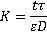

Reverse osmosis desalination plant
Desalination is necessary in a world becoming short of freshwater.
 Hard water
Hard water
 Water softening
Water softening
 Magnetic descaling
Magnetic descaling
 Solar-powered water harvesting
Solar-powered water harvesting
 Treatment of contaminated water
Treatment of contaminated water
"seawater is rendered potable by evaporation "
Aristotle, c. 350 B.C.
Removing salt from seawater and brackish water is important for society with current need of over 40 km3 ˣ yr−1 expected to rise five-fold by 2050. The two main methods involve thermal vaporization or membranes, although ion-exchange resins may also be used [4348]. In 2018, 16,000 operational desalination plants produced around 95 million m3 ˣ d−1 of desalinated water for human use [4359]. About half of this was produced in the Middle East and North Africa. This production created about 142 million m3 ˣ d−1 of waste brine with a negative environmental impact.
At low temperature, water evaporates in inverse proportion to the relative humidity (RH), being maximal at zero RH and zero at 100% RH (-5 °C, [2694] ). The 'simple' way to desalinate water is to boil it, followed by condensation of the steam. This is inefficient as all the liquid has to reach its boiling point before further water is evaporated. To evaporate 1 m3 of water will take about 625 kWh plus ≈ 88 kWh wasted in heating it up to the boiling point. This is a high energy cost, far greater than that theoretically necessary. This gives a maximum efficiency of about 0.3 - 0.4 %, a very inefficient process that is only used where there is plentiful waste heat available. It becomes relatively less costly, where the liquid is highly contaminated (raising the osmotic pressure) or where the heat source for the evaporation is low cost. This energy cost may be significantly reduced by using porous and large-scale graphene aerogels with efficient solar steam generation (54-83%) [2945]. Low-cost evaporation may also be achieved using ambient temperature (or warm waste air) to bubble through the liquid [2186]. The atmosphere in the bubbles efficiently becomes saturated with water, so removing it, with efficient heat transfer to the bulk liquid. The water can then be recovered later from the water-saturated air by condensation. This methodology may be used in sludge dewatering [3365]. The liquid cools when evaporating but may make use of ambient or waste heat to recover. At the steady state, the volumetric balance is
ΔP + ΔT ˣ CpTe = ρTe ˣ ΔHTe
where ΔP and ΔT are the hydrostatic differential pressure (Pa) and temperature difference, respectively, between the gas inlet and outlet, CpTe is the specific heat per unit volume of the flowing gas (J ˣ m−3 ˣ T−1), Te is the steady-state temperature near the surface, ρTe is the water vapor density at Te (kg ˣ m−3), and ΔHTe is the enthalpy of vaporization at Te (J ˣ kg−1) [2650].
Outline reverse osmosis setup
Where there is plentiful salty or brackish water but freshwater is scarce, the salt can be removed from the water by reverse osmosis [2177]. The energy cost for this process is high but has been substantially reduced over the years. The minimum energy required, using reverse osmosis, can be easily calculated from the osmotic pressure of the water [2535] (the osmotic pressure is the pressure required to remove the salt by pushing cleaned water through the semipermeable membrane). The osmotic pressure of 'standard' seawater (≈ 35 g ˣ kg−1 ) is 2.576 MPa. This is equal to 2.576 106 N ˣ m−2 = 2.576 106 kg ˣ m−1 ˣ s−2 = 2.576 106 J ˣ m−3 = 0.716 kWh ˣ m−3. Regarding the energy cost, this is rather low for providing a metric ton of drinking water. The actual energetic cost of desalination will be somewhat greater than this (2x - 3x) due to inefficiency, including material losses and fouling [2535]. The consequential higher pressure generally used is ≈ 6 MPa, with the lowest achievable energy consumption of reverse osmosis being ≈ 2 kWh ˣ m−3 [3190] (36% efficiency). A reverse osmosis desalination plant with a capacity of 3000 m3 ˣ d−1 built to overcome the water shortage in Suez City, Egypt, has been case-studied [3444].
This energy (≈ 2 kWh ˣ m−3) and financial (≈ 1-2 US $ ˣ m−3) cost may be raised if less seawater is used but lowering water preparation costs, or reduced if lower salt-content water is used, like waste water (≈ 20% used) or brackish water (≈ 20% used). The pressure applied is about twice the osmotic pressure of the feed solution and increases slightly with temperature. This is a high-growth area with most of the world's desalination produced by reverse osmosis and the remainder by energetically-more expensive distillation. London has a reverse osmosis plant using the brackish Thames estuary water and is capable of producing about 145,000 m3 ˣ day−1 using renewable energy from restaurant waste fat and oil. Pretreatment of the water feed is essential, and this includes filtration and chemical treatment.
Elements of graphene oxide, with surface
hydroxyls, epoxides, and carboxylic acids
BNNT (7,7)
from [3103]
Reverse osmosis membranes usually consist of a thin (≈ 1 µ) separation film attached to a macroporous supporting material. The functional separation layer separates the solutes from the feed water, is often made of crosslinked aromatic polyamide. The hydration structure of such membranes has been studied [3192]. The resistance to diffusion (K) in these membranes can be described as,

where t, τ, and ε represent the thickness, tortuosity, and porositya of the membrane, respectively, and D represents the diffusion coefficient of the solute or the solution within the membrane.
Much work has concerned the development of improved membranes [3231]. A nanoporous carbon composite membrane has been found to display high water flux due to exceptionally high surface diffusion, together with an excellent salt rejection [2616, 2958]. Both factors can be explained in terms of the hydrophobic surface interaction with water. A significant advance in this area has been the production of graphene oxide membranes (see above right) with controllable interlayer spacing (< 1 nm) [2880], shown to be essential for high water passage with negligible salt passage [4315]. Graphene oxide has two structural domains; hydrophilic oxygen-rich surfaces and hydrophobic graphene-like regions. Laminated graphene oxide has a surprisingly high water uptake capacity (0.58 g ˣ g−1 graphene oxide) and very high adsorption/ desorption rates, attributed to the high capillary pressures plus µ-sized surface capillaries [2991]. Even small amounts of water hydrate graphene oxide in organic solvents to form a liquid crystal phase [4050]. The graphene oxide pores are effective in blocking hydrated Na+ and Cl− ions with substantial energy barriers [2978]. Alternative methods utilize vertically aligned graphene sheets bridged by twisted carbon fibers [2981] and boron nitride nanotubes (BNNT) [3103]. Reduced graphene oxide membranes with enlarged interlayer distance, made with theanine amino acid or tannic acid as reducing agent and cross-linker, give a water flux of over 2,400 m3 ˣ m−2 ˣ d−1 ˣ MPa−1 [3276]. The formation of a fouling scale on the membrane surface (caused by, for example, calcium carbonate, CaCO3) and calcium sulfate, CaSO4) degrades the filtration performance. Air micro-nano bubbles have been shown to control this fouling efficiently, without chemical (e.g., Nalco PermaTreat PC-191T) addition [3803].
Outline forward osmosis setup
Developments in osmosis include forward osmosis [3277], where a solution, with very high osmotic pressure, draws water through the semipermeable membrane [3841] without any external pressure (so lowering any risk of membrane fouling and plugging). A key advantage is that forward osmosis desalination is less susceptible to membrane fouling compared to the pressure-driven reverse osmosis. The draw solution is chosen such that the high osmotic material is easily removed (e.g., by filtration, forward osmosis or distillation [3478]) so releasing the pure water. This methodology may be used in sludge dewatering.
Magnetic and electric fields may be arranged to affect forward osmosis. The flow rate may be reduced due to increased hydrogen bonding within a magnetic field. Also, applying an electric or magnetic field may cause the rejection of the ions ) [3150].
Outline of electrodialysis desalination, from [3208]
Shown right is an outline of the electrodialysis desalination process [3208]; CEM = cation-exchange membrane, e.g., Nafion®, AEM = anion-exchange membrane, e.g., quaternary ammonium. The thickness of the cells is generally much thinner than shown (< mm). The electrodes cause the ions to move towards their opposite charges. The cation exchange membrane contains fixed negative charges allowing positive ions to move across but block anions. Conversely, the anion exchange membrane contains fixed positive charges blocking cations but allowing the anions to cross.
Electrodialysis has a limitation compared with reverse osmosis as it cannot remove uncharged or higher molecular weight ionic components from the feed stream.
[Back to Top  ]
]
Membrane distillation is a thermally-driven separation process in which only vapor molecules transfer through a micro-porous hydrophobic membrane, such as polytetrafluoroethylene (PTFE) or polypropylene. The driving force for membrane distillation is the vapor pressure difference due to the temperature difference across the hydrophobic membrane [3811]. This process has various applications, such as desalination, wastewater treatment, and the food industry. The process may be improved by the prior processing using the Fenton reaction [3810].
There is an increased need for renewable energy. One way it can be generated is using high salinity water (e.g., seawater) separated from low salinity water (e.g., river water), using a membrane and pressure retarded osmosis. The volume increase in the concentrated solution, on the passage of water through the membrane, can be coupled to hydro-turbines to produce power ('osmotic power') [3288]. This power, utilizing the high salt 'waste' water, may be used to partially allay the energy cost of a reverse osmosis system [3448].
There is a porous crystal ) that acts like a sponge absorbing water vapor from the air even in dry deserts. The crystal is an aluminum-based square metal-organic framework (MOF, e.g., [Al(OH)(1H-pyrazole-3,5-dicarboxylate], MOF-303). In MOF-303 the aluminum atoms each have six links, three to neighboring Al atoms through O atom (Al-O-Al) linkages and three through shared carboxylate groups (from one end of each 1H-pyrazole-3,5-dicarboxylate) with neighboring Al atoms. By tailoring the separation of the aluminum corners with the organic linker groups, various gases like CO2 or H2O can be absorbed. The device may be solar-powered and produce up to 1.3 kg of water per day from each kg of the MOF used with cycling mild temperature swings [3757]; the water absorbing at low temperatures (e.g., 30 °C) and releasing at higher temperatures (e.g., 85 °C).
Bubble coalescence is inhibited in saltwater, enabling a method for desalinating seawater [2186] or other brackish water. A high surface area of many tiny bubbles is produced in a bubble column evaporator (using a sintered glass gas entry) using saltwater, but not in freshwater as then the bubbles coalesce. This allows the rapid production of water-saturated air that can then be condensed. The hot bubble column evaporator process produces hot gas bubbles of 1-3
mm of diameter that can be used to sterilize the water [3768].
The disinfection of water is commonly achieved [3768] by using UV lamps or chlorine (through hypochlorous acid or chlorine dioxide), or ozone.
Cl2 + H2O 3  HCl + HOCl
HCl + HOCl
5NaClO2 + 4HCl  4ClO2 + 5NaCl + 2 H2O
4ClO2 + 5NaCl + 2 H2O
2O3  3O2
3O2
O3 + OH−  HO2− + O2
HO2− + O2
O3 + HO2−  ·OH + O2·− + O2
·OH + O2·− + O2
[Back to Top  ]
]
a The porosity (e) of the membrane is the ratio of the volume of solution contained within the membrane to the total volume of the membrane. The porosity is always between zero and unity (0 ≤ e ≤ 1). The tortuosity (t) is the average ratio of the path length, via the pores between the membrane,surfaces to the membrane thickness. The tortuosity, which is always greater than or equal to unity (t ≥ 1), depends on the pore geometry. [Back]
Home | Site Index | Osmotic pressure | Electrolysis | LSBU | Top
This page was established in 2002 and last updated by Martin Chaplin on 1 November, 2021